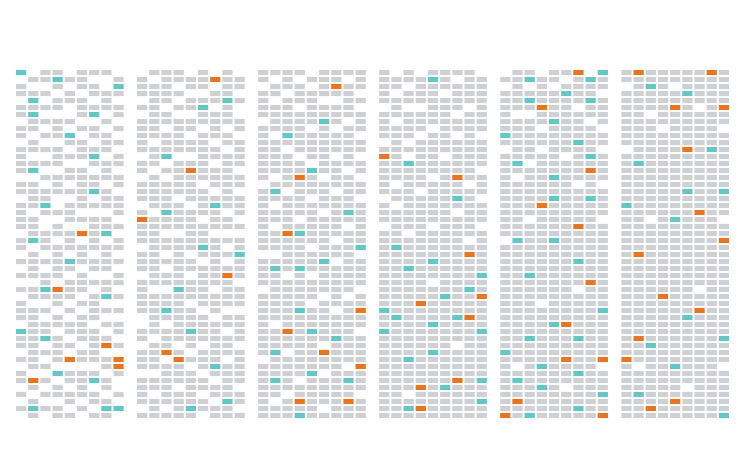
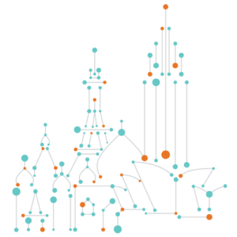

We’re not your typical investment manager. We follow principles of technology and innovation as much as principles of investment management. Fields like machine learning and distributed computing guide us. Since 2001, we’ve searched for ways that these kinds of technologies can make us better at what we do. We never stop researching and developing.
In the process, we work to help real people. Through our investors, we support the retirements of millions around the world. And we help fund breakthrough research, education and a wide range of charities and foundations.
Technology drives our business. We use machine learning, distributed computing and other technologies to find connections in the world’s data. We’ve been pushing the frontiers of Big Data since before it was a buzzword. To us, it’s just data. We work with vast sets of it, from over a thousand diverse sources.
We’re always looking to improve our investment strategies, measuring our results as we go along. So we can make more intelligent trading decisions, with one eye on generating real alpha, and the other on effectively managing risk.
Guided by the scientific method, we devise models that begin with inspired ideas or economic hypotheses. In a systematic, process-driven fashion, models are expanded, tested and integrated into our investment strategies.